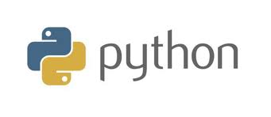

<!DOCTYPE html>
<html>
    <head>
        <meta charset="utf-8">
        <meta name="apple-mobile-web-app-capable" content="yes" />
        <meta name="apple-mobile-web-app-status-bar-style" content="black-translucent" />
        <meta name="viewport" content="width=device-width, initial-scale=1.0, maximum-scale=1.0, user-scalable=no">

        <title>Tire ton langage</title>
        <link rel="stylesheet" href="reveal/css/reveal.min.css">
        <link rel="stylesheet" href="reveal/css/theme/microalg.css" id="theme">

        <!-- If the query includes 'print-pdf', use the PDF print sheet -->
        <script>
            document.write( '<link rel="stylesheet" href="reveal/css/print/' + ( window.location.search.match( /print-pdf/gi ) ? 'pdf' : 'paper' ) + '.css" type="text/css" media="print">' );
        </script>

        <!--[if lt IE 9]>
        <script src="reveal/lib/js/html5shiv.js"></script>
        <![endif]-->

        <script>window.jQuery || document.write('<script src="jquery.min.js"><\/script>')</script>
        <link rel="icon" href="img/logo_microalg.ico" />

        <script type="text/x-mathjax-config">
        MathJax.Hub.Config({
            extensions: ["tex2jax.js","fp.js"],
            MathMenu: {
                showLocale: false,
            },
            jax: ["input/TeX","output/HTML-CSS"],
            tex2jax: {
                inlineMath: [['$','$']],
                displayMath: [['$$','$$']],
                }
            });
        </script>
        <script type="text/javascript" src="mathjax/MathJax.js?locale=fr"></script>
    </head>

    <body>
        <div class="reveal">
            <div class="slides">
                <section data-markdown data-separator="^\n----*\n" data-vertical="^\n\n" data-charset="utf-8">

                    <script type="text/template">
&nbsp;

# Tire ton langage de programmation

&nbsp;

&nbsp;

&nbsp;

<div style="text-align: right; font-size: 75%;">31 mars 2016</div>
<div style="text-align: right;">Lycée Carcouët à Nantes</div>

---

# Qu’est-ce ?

* **séquence d’instructions**
    * langage machine, assembleur, C, Java, Python, C#, PHP…
* **données structurées**
    * HTML, XML, CSS…
* la **structure des données du programme** et **leurs relations** entre elles ou avec l’extérieur
    * les langages « orientés objet » (C++, Java, Python, C#…)
    * ou les langages fonctionnels (certains Lisp, Haskell, Caml…)
* des **requêtes** (SQL, Prolog, expressions régulières…)
* …

---

# Les plus connus

<div class="nocenter">


<br>




<br>


---

# Un peu d’histoire

* Mécanique
    * Charles Babbage et Ada Lovelace
    * CB : Architecte de la Machine Analytique
    * AL : La première personne à programmer

---

# Ada Lovelace


---

# La machine analytique


---

# La machine analytique


---

# Un peu d’histoire

* Mécanique
* Électrique/Électronique
    * Câbles
    * Transistors
    * Micro-processeurs

---

# ENIAC


---

# Grace Hopper


---

# Grace Hopper

À partir de 1957, […] elle défend l'idée qu'un
programme **devrait pouvoir être écrit dans un langage proche de l'anglais**
plutôt que d'être calqué sur le langage machine, comme l'assembleur.

<div style="text-align: right; font-size: 75%;">Wikipedia</div>

---

# Générations de langages

* Première génération
    * le **langage machine**
    * instructions sous forme de **suites de 0 et de 1**
    * telles qu'elles vont être exécutées par un processeur
    * **propres à chaque type de processeur**

---

# Générations de langages

* Deuxième génération
    * le langage de type **assembleur** (depuis 1955)
    * instructions forme **alphanumérique** (lettres et chiffres)
    * sur le processeur *6502*, `01101001` s'écrira `LDA` et correspond à une
      opération *load accumulator*
    * langages **encore très liés au type de processeurs**

---

# Générations de langages

* Troisième génération et générations suivantes
    * langages dits **de haut niveau**
    * plus proches des **langues naturelles**, mais très structurés
    * peuvent s’exécuter sur **différents types de processeurs**
        * compilation
        * ou interprétation
        * ou un savant mélange des deux

---

# Langages ésotériques / exotiques

Au 27 mars 2016, voici les 1053 langages proposée par
[esolangs.org](https://esolangs.org/wiki/Language_list) :

<div style="text-align: right; font-size: 75%;">flêche du bas pour dérouler</div>


`!!!`
`!!!Batch`
`???`
`$tonePits`
`(())`
`():;+-#?!`
`()`
`*brainfuck`
`*W`
`--C-=C-C--`
`.box`
`.Gertrude`
`.m@dpr'a'prozessor`
`.mOdMoDwOrM`
`.yacuabll`
`///`
`0(nop^)`
`01_`
`0815`
`0x29A`
`0x29C`
`1+`
`123`
`1337`
`1cnis`
`1L`
`1mpr0mp2`
`2-ill`
`2050706`
`23`
`2B`
`2D-Reverse`
`2DP`
`2iota`
`2L`
`3code`
`3D`
`3switchBF`
`4`
`4DL`
`5-logic`
`5command`
`6ix`
`7Basic`
`90`
`96`
`:≠`
`><>`
`@tention!`
`@text`
`[]`
`\BV`
`]`
`~`
`~#`
`~-~!`
`~ATH`
`~English`
`µCurse`
`Юᓂ곧⎔`


`AAAAAAAAAAAAAA!!!!`
`Aargh!`
`ABC`
`ABCDXYZ`
`ABCs`
`ACIDIC`
`A:;`
`ACRONYM`
`Addleq`
`ADJUST`
`Aeolbonn`
`Aeon`
`AFTL`
`Agony`
`Aheui`
`AIV`
`Ajsone`
`Alacrity`
`ALAGUF`
`Alchemy`
`Ale`
`Alight`
`ALPACA`
`AlPhAbEt`
`AlphaBeta`
`Alphabetti spaghetti`
`ALPL`
`/ˈæmbiːɛf/`
`Amelia`
`Amycus`
`Amycus Severus`
`And`
`Andrei Machine 9000`
`Anemone`
`AnnieFlow`
`Another Pi Language`
`Ante`
`AnyPL`
`A0A0`
A programming language is an artificial language designed to communicate instructions to a machine, particularly a computer.
`Arbol`
`ARCAL`
`Archway`
`Argh!`
`Armok`
`Arrow`
`asdf`
`AssemblerFuck`
`Ashtol`
`Atom`
`AttoASM`
`ATZ`
`Aubergine`
`Auo`
`Aura`
`AutoMouse`
`Ax`
`axo`
`az`


`BackFlip`
`Backtracking INTERCAL`
`Bag`
`BAK`
`BAM128`
`BANCStar`
`Bantas`
`Barely`
`Basic Input/Output Commands`
`BCDFuck`
`BDAMD`
`Beam`
`Bear Food`
`Beatnik`
`Beeswax`
`Befalse`
`Befreak`
`Befunge`
`Befunge/index.php`
`Befunk`
`Benul`
`BestFriends.js`
`beta-Juliet`
`Betterave`
`Beturing`
`BFEnet`
`BFI`
`BF Joust`
`BFM`
`BF-PDA`
`BF-RLE`
`BF-SC`
`Billiard ball machine`
`Binary combinatory logic`
`Binaryfuck`
`Binary lambda calculus`
`Binodu`
`BIO`
`Biota`
`Bipoint`
`BIT`
`BitBitJump`
`BitChanger`
`BitChip`
`BitFlip`
`Bitfuck`
`Bitoven`
`BiTrax`
`Bitwise Cyclic Tag`
`Black`
`Blank`
`Blind`
`blo`
`Bloop`
`Bloux`
`Boat`
`BogusForth`
`Boolfuck`
`Boxy`
`Bracket Hax`
`Brackit`
`brainbool`
`BrainClub`
`Braincopter`
`BrainCurses`
`Brainfact`
`Brainfork`
`brainfuck`
`Brainfuck++`
`Brainfuck--`
`BrainfuckXT`
`Brainfuck/w/index.php?title=Talk:Brainfuck/index.php`
`brainfunct`
`BrainFunge2`
`Brainhype`
`Brainloller`
`Brainlove`
`Brains`
`Brainscrambler`
`BrainSpace 1.0`
`Brainstack`
`Brainstuck`
`Braintrust`
`Braintwist`
`Braktif`
`Branch`
`BRB`
`Brian & Chuck`
`Brook`
`Bruijndejx`
`BRZRK`
`BSM`
`B-tapemark`
`Bub`
`Bubble`
`Bullfrog`
`Burlesque`
`Burro`
`ByteByteJump`
`Bytemap`
`BytePusher`
`Byter`
`Byte Syze`


`ↄ`
`C+`
`Cabra`
`Calculon`
`CalScript`
`Camouflage`
`CaneCode`
`Capuirequiem`
`Cardinal`
`Carriage`
`CASTLE`
`Catch`
`cbrain`
`Cellbrain`
`Celum`
`Cfluviurrh`
`Challenger`
`Checkout`
`Chef`
`Chicken`
`Child`
`Choon`
`Churro`
`Circuit Diagram`
`Circute`
`CJam`
`CLC-INTERCAL`
`ClearBF`
`Clem`
`Clip`
`C-LONG`
`CLooP`
`Clue (Keymaker)`
`Clue (oklopol)`
`Clunk`
`COBOL`
`Cod`
`Codan`
`Colambda`
`ComeFrom`
`Come Here`
`Commercial`
`COMPLEX`
`Complode`
`Con-Text`
`Condit`
`Constantinople`
`ContinuousEquation`
`Conveyor`
`Cood`
`Cork`
`Crab`
`Crainfuck`
`CRTL`
`CT`
`Ctonia`
`Cufrab`
`Cupid`
`CUTLASS`
`Cvlemar`
`Cyclic ACIDIC`


`Daft`
`DALIS`
`Daoyu`
`Dark`
`Darmok`
`DateFuck`
`DBFV!`
`DcScript`
`dd/dd`
`Deadfish`
`Deltaplex`
`Derpcode`
`Derplang`
`Deviating Percolator`
`d1ffe7e45e`
`DigFill`
`Dimensifuck`
`Dimensions`
`Dirst`
`Dis`
`Divzeros`
`DL`
`DNA#`
`DOBELA`
`DOG`
`Dogescript`
`Doorspace`
`Dot`
`DoubleFuck`
`Drainfuck`
`Drive-In Window`
`DStack`
`Duck Duck Goose`
`Dumbf*ck`
`DumbScript`
`DUP`
`Dupdog`
`DZZZZ`


`Easy`
`Edge`
`EGL`
`ELANG`
`Electric BitFunk`
`Element`
`Elog`
`Emmental`
`Emo`
`Emotebatch`
`Emoticon`
`EmuBug`
`EncryptFuck`
`Enema`
`Enigma-2D`
`Eniuq`
`Entropy`
`Eodermdrome`
`EOOOL`
`EPL`
`EPOAQ`
`Espro`
`ETA`
`eTalk`
`ETAS`
`Etcha`
`Everett`
`evil`
`excela`
`EXCON`
`Expload`
`Extended Foo`


`F`
`Fackward`
`Fact`
`FakeASM`
`FALSE`
`FANJIX`
`ferNANDo`
`Figurehead`
`FileCode`
`FiM++`
`Finite Groups`
`Fishing`
`FISHQ9+`
`Fission`
`Fit`
`Flatline`
`Flip`
`FlogScript`
`flow_chart`
`Flump`
`Fm`
`Fob`
`Folder not to be confused with`
`Folders`
`Foo`
`Foobar and Foobaz and Barbaz, oh my!`
`Formula`
`Forobj`
`Forte`
`Fortob`
`Fortuna`
`Fourfuck`
`Fourier`
`Fractran`
`Fractran++`
`FRAK`
`Fringespeak`
`Fromage`
`Fuck4`
`Fueue`
`Fugue`
`Full 0`
`Funciton`
`Fünke`
`Fuun DNA`
`Fuun RNA`
`FURscript`


`G*`
`Gammaplex`
`GASOIL`
`Gbagbo`
`gecho`
`Gemooy`
`Genome`
`Geom`
`Geom++`
`Gibberish`
`Gibberish/JavaScript, another kind of Gibberish`
`Glass`
`Glypho`
`GML`
`GodScript`
`Goldfish`
`GolfScript`
`Golunar`
`Gorispace`
`Goto`
`GOTO++`
`GOTO 10`
`GPRX 3000`
`GrainFimple`
`GraNoLa/M`
`Grass`
`Gravity`
`Gray Snail`
`GridScript`
`Grin`
`Grits`
`Grocery List`
`Grusom Skjebne`


`Hack VM`
`Haifu`
`Half-Broken Car in Heavy Traffic`
`HALT`
`Hannah`
`Hanoi Love`
`HaPyLi`
`Hargfak`
`Harp`
`Hatter`
`hcbf`
`Headsecks`
`HeartForth`
`Hebe Script`
`Hello++`
`HELP`
`Hev`
`HEX`
`Hexagony`
`hexish`
`Higher Subleq`
`HighFive`
`Hollow`
`Home Row`
`Homespring`
`Hoon`
`HSPAL`
`HSQ`
`Hunter`
`Humo`
`hydra`
`Hyperamycus`
`Hyper Set Language`


`iag`
`IDTM`
`Iexp`
`Ignition`
`IINC`
`ILLGOL`
`Immi`
`Impera`
`INCAL`
`Indirect`
`InfChessPro`
`Infinite Vector`
`InfiniTUM`
`Inline`
`Insomnia`
`Integral`
`INTERCAL`
`InterWater`
`Intolerant`
`Iota`
`IRC`
`Iris`
`ISCOM`
`itflabtijtslwi`


`J--`
`Japt`
`Jasp`
`Java2K`
`Jolverine`
`Jot`
`JSFuck`
`Jug`
`JUMP`
`JumpFuck`
`JUSTIF`


`Kangaroo`
`KanjiCode`
`Karma`
`Kayak`
`Kelxquoia`
`KEMURI`
`Keya`
`KimL`
`Kipple`
`Kkipple`
`KlingonCode`
`Klon`
`Knight Shuffling Tower`
`Kolmogorov`
`K-on Fuck`
`kvikkalkul`


`Labyrinth`
`Lamb`
`Lambda`
`Lambdastack`
`Lambda: the Gathering`
`Langar.io`
`Last ReSort`
`Lazy`
`Lazy Bird`
`Lazy K`
`l33t`
`Lenta`
`Leszek`
`Lhooq`
`Libra`
`Libertas`
`LICE`
`Ligature Machine`
`Light Pattern`
`Lii`
`Limp`
`Linguine`
`Liquid`
`LLL`
`LNUSP`
`LOCK`
`Logical`
`LOLA`
`LOLCODE`
`L00P`
`Loose Circular Brainfuck (LCBF)`
`Lo'reran`
`Luigi`


`Macmac`
`Madbrain`
`Madness`
`Magenta`
`Magic`
`Magicard!`
`MagiStack`
`MailBox`
`Malbolge`
`Malbolge Unshackled`
`Mang`
`Manufactoria`
`Marbelous`
`MarioLANG`
`Mascarpone`
`MATL`
`Maze`
`McCulloch's second machine`
`McCulloch's third machine`
`M-code`
`MDPN`
`MechaniQue`
`Memfractal`
`Memfuck`
`memPanic`
`Meq`
`Metropolis`
`MIBBLLII`
`Mice in a maze`
`Microscript`
`Migol`
`Mimsy`
`mindfunc`
`Mineso`
`Minifuck`
`Minifuck-2D`
`Minimal`
`Minimal-2D`
`MiniMAX`
`MinISCule`
`miniUSPL`
`Minks`
`Minus`
`MISC`
`MISC-x86`
`MKBL-LN`
`Mmmm()`
`MNNBFSL`
`Mobius`
`ModanShogi`
`MonkeyCode`
`Monkeys`
`MONOD`
`Mornington Crescent`
`Mouse`
`MSG`
`MSM`
`MuFuck`
`MUMON`
`Muriel`
`Musical notes`
`Musical-X`
`Muxcomp`
`M×N-Dimensional Brainfuck`
`Mycelium`
`Myth`
`My Unreliable Past`


`Nandarin`
`Nandypants`
`NegaPosi`
`Nest`
`NetFuck`
`Network Headache`
`Neurosis`
`Nevermore`
`Nhohnhehr`
`Niblet`
`NICE`
`Nietzsche`
`Nock`
`Noisett`
`noit o' mnain worb`
`Nonsense Query Lists`
`Noobinary`
`Noodle Soup`
`Norfuck`
`Nothing`
`Not The Main Worb`
`nouse`
`Novice`
`Nqubl`
`NRSRSSOMN`
`NSFW`
`NTCM`
`NucleotideBF (nBF)`
`NULL`
`Numberix`
`Numberwang`
`Numeric Batch`
`Numeric Topline`
`Numobin`
`NUMPAD`
`Nyarlathotep`
`Nybbleist`


`O`
`Obfuna`
`Object (programming language)`
`Object disoriented`
`Object oriented thue`
`ObjectPar`
`ODDBALL`
`Odtizuda`
`OGEL`
`OISC`
`Omam`
`Omegaplex`
`Omgrofl`
`onoz`
`Oof!`
`Oozlybub and Murphy`
`Optimism`
`Ora`
`ORK`
`Oroogu`
`Orthagonal`
`OrthINTERCAL`
`Orthogonal`
`Owhelgossip`
`Owk`
`Owl`
`Ozone`


`P`
`P′′`
`P1eq`
`Paintfuck`
`Paintfuck+`
`Pancake Stack`
`Parenthesis Hell`
`Parenthetic`
`Parnassus`
`PATH`
`Pavia`
`pax`
`pb`
`pbrain`
`Perl`
`Perligata`
`Petrovich`
`PHAWN`
`Philosophy Script`
`PHL 1.0`
`Pi`
`Pieces`
`Piet`
`Piet-Q`
`PingPong`
`Pinocchio`
`Pirandello`
`Pit`
`Platts`
`Please Porige Hot`
`Pluso`
`POGA-INTERCAL`
`PoGo`
`PointerB`
`PointerTape`
`Pointy`
`Poison`
`Polynomial`
`Poochiewuddledumpling-Boobledarling`
`Portable Minsky Machine Notation`
`Portia`
`Powerlist`
`PREFIX`
`Prelude`
`ProgFk`
`PROLAN/M`
`Proof`
`PureStack`
`Purple`
`Puzzlang`
`Pyth`
`PZAB`


`Q`
`Q-Bal`
`Qdeql`
`QFL`
`Q-Ref`
`Quantum brainfuck`
`Quantum Dimensions`
`QUATRE-CALC`
`Qugord`
`Quiney`
`Quipu`
`QUOTE`
`Quylthulg`
`Qwertycode`
`Qwerty Reverse Polish Notation`


`Radixal!!!!`
`Ragaraja`
`RAGE!!!`
`Rail`
`RAND`
`Rand.Next()`
`Random`
`Rasen`
`RCEM`
`ReactionCan`
`Real Fast Nora's Hair Salon 3: Shear Disaster Download`
`Reaper`
`REBEL`
`Recurse`
`RecurseMe`
`Redcode`
`REDGREEN`
`Refract`
`RegexPL`
`REGXY`
`reMorse`
`rename`
`Replace`
`Replacefuck`
`REsKrIb!lo`
`RESOL`
`ResPlicate`
`ReThue`
`Retina`
`RETURN`
`Revaver`
`Revaver2pi`
`REVER`
`REverge`
`REVERSE`
`Reversible-2D`
`Reversible Brainfuck`
`Revomer`
`rflct`
`RFOL`
`Rhotor`
`RingCode`
`RinGy`
`Ririsu`
`RISBF`
`rLS`
`RNA`
`Roadrunner`
`Roco`
`ROOP`
`Rotary`
`RPOS`
`RSSB`
`RU`
`RUBE`
`RubE On Conveyor Belts`
`RUM`
`RunR`
`RWLR`


`SADOL`
`Sally`
`Sansism`
`Sbeezg`
`SBN`
`SCAB computer`
`Sceql`
`Sclipting`
`Scotty`
`Scrip7`
`ScripTur`
`SCRUBS4U`
`Selector`
`Self-modifying Brainfuck`
`Self-modifying Puzzlang`
`Semi-quantum`
`SendStuff`
`Ser2`
`Seriously`
`SGMJQFuck`
`Shakell`
`Shakespeare`
`Shelta`
`Shoopuf`
`Shove`
`Simplefunge`
`Single Four`
`Skull`
`Skull+`
`Slash-01`
`Slim`
`Smallfuck`
`small s.c.r.i.p.t.`
`SMATINY`
`SMETANA`
`SMIL`
`Smilefuck`
`SMITH`
`SMITH#`
`SMITHb`
`Smu`
`Smurf`
`Snack`
`Snowflake`
`Snowman`
`SNUSP`
`SockZ`
`Somnypna`
`Sonata`
`SON-OF-UNBABTIZED`
`SORTA`
`Sorted!`
`Sortle`
`SoT`
`Spaghetti`
`SPAM/1`
`Spaz`
`Spiral`
`SPL`
`Splinter`
`Spoon`
`Spyrodecimal`
`Sqirrel - Peter`
`SQRT`
`Squishy2K`
`SSBPL`
`StackBeat`
`StackFlow`
`Stacking`
`Stackmill`
`Stackstack`
`StackStacks`
`StaPLe`
`Staq`
`Stasis`
`StateFlip`
`Stlang`
`Stlisp`
`Strato`
`Strelnokoff`
`Stue`
`STXTRM`
`Subleq`
`Subskin`
`Subtle cough`
`Suffolk`
`suicide`
`Sultan's daughter`
`SumaMoito`
`SuperPar`
`Super Stack!`
`Surface`
`Suxesol`
`Suzy`
`SVM`
`Switchy`
`SYCPOL`
`SyL`
`Symball`
`Symesol`
`SynDev`


`Table`
`Tag`
`Takeover`
`Taktentus`
`Tamerlane`
`TAPASM`
`TapeBagel`
`Taxi`
`tbf`
`Tedius`
`TempoVar`
`Terse`
`Tg`
`Th`
`thaM`
`The Amnesiac From Minsk`
`TheSquare`
`thETA`
`This=That`
`This=That 2.0`
`THRAT`
`Threaded INTERCAL`
`Three Star Programmer`
`Thubi`
`Thue`
`Thutu`
`timefuck`
`Time Out`
`Tiny`
`tinyBF`
`TLWNN`
`TMCB`
`TMMLPTEALPAITAFNFAL`
`Toadskin`
`TOD`
`Toi`
`Tome`
`Tonoco`
`Topline`
`Tory`
`Track`
`TRANSCRIPT`
`Tree`
`Tri`
`Triforce`
`Trigger`
`TriINTERCAL`
`Triskaidekalogophilia`
`Trite`
`Troupe`
`True`
`TrumpScript`
`TScript`
`tuplary`
`Turing Script`
`Tweak`
`Twimp`
`TWiRQ`
`Twocode`
`TwoDucks`
`Two Fifty Six`
`TwoStep`


`UberGenes`
`Udage`
`Ultimate Programming Language to Take Over a Prison, Then He World`
`UM-32`
`UNBABTIZED`
`Unc`
`Uncomment`
`Underload`
`Unicat`
`Unispace`
`Univar`
`Unlambda`
`Unreadable`
`URSL`


`V`
`V--`
`var'aq`
`Varsig`
`VD3`
`Velato`
`Verbose`
`Versert`
`Version`
`Version2`
`Vertica Smile`
`Vigil`
`Viktor's amazing 4-bit processor`
`Villmark`
`VIOLET`
`Virgo`
`Vitsy`
`vowels`
`Vrejvax`
`VTL`


`Waduzitdo`
`Wait`
`Wake`
`WARP`
`WASD`
`Wct`
`Weave`
`Wheat`
`When`
`Whenever`
`Whirl`
`Whitespace`
`Who`
`Wierd`
`Wigner's Fuckbuddy Is A (|Top> + |Bottom>)/√2`
`Wiki`
`Wiki Cyclic Tag`
`Wikiplia`
`WILSON`
`Wittgen`
`Word!CPU`
`Wordfuck`
`Wordy`
`WTFZOMFG`
`Wunnel`
`WUUI`


`X++`
`XBF`
`x-D`
`Xigxag`
`XRF`
`XS`
`XSM`
`X.so`


`Y`
`YABALL`
`Yboy`
`Yellow Four Code`
`You are Reading the Name of this Esolang`
`Your Minsky May Vary`
`Ypsilax`


`Zetaplex`
`Ziim`
`ZOMBIE`
`Zot`
`ZOWIE`
`ZT`
`Zucchini`
`ZZZ`

---

# Intercal

    DO ,1 ← #13
    PLEASE DO ,1 SUB #1 ← #238
    DO ,1 SUB #2 ← #108
    DO ,1 SUB #3 ← #112
    DO ,1 SUB #4 ← #0
    DO ,1 SUB #5 ← #64
    DO ,1 SUB #6 ← #194
    DO ,1 SUB #7 ← #48

---

# Intercal

* considéré comme le **premier langage ésotérique** (1972)
* **tourne en dérision** certains langages de l'époque
* son nom est une blague :  
  *The full name of the compiler is « Compiler Language With No Pronounceable
  Acronym » which is, for obvious reasons, abbreviated « INTERCAL ».*
* dans le manuel d'INTERCAL des instructions **paradoxales ou insensées** :  
  *Attention ! Ne confondez en aucune circonstance la grille avec l'opérateur
  d'interpolation, excepté en cas de circonstances pouvant porter à confusion !*

---

# ArnoldC

* N’apporte pas un concept nouveau,
* traduit littéralement un langage classique comme le C.
* Il y a beaucoup de langages ésotériques de ce genre,
* il est très facile de fabriquer le vôtre.

---

# ArnoldC

    MethodArguments
      I NEED YOUR CLOTHES YOUR BOOTS AND YOUR MOTORCYCLE
    Return
      I'LL BE BACK
    EndMethodDeclaration
      HASTA LA VISTA, BABY
    CallMethod
      DO IT NOW
    AssignVariableFromMethodCall
      GET YOUR ASS TO MARS

---

# Shakespeare

* Les programmes ressemblent à une **pièce de théâtre**.
* Les **personnages** de la pièce correspondent aux **variables**.
    * (personnages de Shakespeare uniquement, comme *Romeo*, *Juliet*, *Hamlet*…)
* Ensemble d'**actes** et de **scènes**.
* Valeurs :
    * Chaque nom correspond à une constante 1 s'il est joli, -1 sinon.
        * `flower`, `joy` ou `angel` vaudront 1 ; `devil`, `bastard` ou `death`
          vaudront -1.
        * Tout adjectif précédant un nom le multipliera par deux.
    * Ainsi, la phrase suivante :  
      *« a charming cute golden flower and the silly beggar »*  
      aura la valeur de 6 (2³×1+2×(-1)).
* `Speak your mind` affiche le caractère contenu dans la variable (personnage)
  qui parle.
* **Chef** propose le même concept, avec des recettes de cuisine.

---

# BrainF*

* Langage de programmation **minimaliste** (1993).
    * Objectifs :
        * un langage de programmation **simple** (donc **difficile** !!!),
        * et dont le compilateur aurait la taille la plus réduite possible.
* Le langage possède seulement huit instructions :  
  `>` `<` `+` `-` `.` `,` `[` `]`
* Deux descendants notables : *Whitespace* et *Ook!*.
    * Reprennent les instructions de BF, mais codées par :
        * des espaces ou tabulations pour le Whitespace,
        * des combinaisons de `Ook?` `Ook.` `Ook!` (par paires car 3²=9).

---

# Whitespace


---

# Ook!

    Ook. Ook. Ook. Ook. Ook. Ook. Ook. Ook. Ook. Ook.
    Ook. Ook. Ook. Ook. Ook. Ook. Ook. Ook. Ook! Ook?
    Ook. Ook? Ook. Ook. Ook. Ook. Ook. Ook. Ook. Ook.
    Ook. Ook. Ook. Ook. Ook. Ook. Ook. Ook. Ook. Ook?
    Ook. Ook. Ook. Ook. Ook. Ook. Ook. Ook. Ook. Ook.
    Ook. Ook. Ook. Ook. Ook. Ook. Ook. Ook. Ook. Ook.
    Ook. Ook. Ook. Ook? Ook. Ook. Ook. Ook. Ook. Ook.
    Ook. Ook. (...)

---

# Befunge

     >78*vD
    v$_#>vN
    7#!@  A
    3 :v??v
    9,-""""
    4+1ACGT
    +,,""""
    >^^<<<<

* Considéré comme le premier langage représenté en deux dimensions.
* Se lit en se déplaçant dans le tableau de caractères en suivant les
  « flèches » :  
  `>` `<` `^` `v`

---

# Piet

* C’est le prénom du peintre **Mondrian**.
* Langage plus ou moins dérivé de Befunge, où les instructions sont codées par
  des **couleurs**.
* Sur les trois programmes ci-dessous, un écrit « Piet » à l’écran.


---

# Malbolge

* Conçu pour être **impossible** à utiliser.
* Bien sûr, certains ont essayé de les utiliser quand même !
    * Si difficile à comprendre qu'il a fallu attendre deux ans un premier
      programme.
    * Même pas été écrit par un être humain : généré par un algorithme de
      recherche par faisceaux.

---

# Malbolge

    (=<`:9876Z4321UT.-Q+*)M'&%$H"!~}|Bzy?=|{z]KwZY44Eq0/{mlk**
    hKs_dG5[m_BA{?-Y;;Vb'rR5431M}/.zHGwEDCBA@98\6543W10/.R,+O<

---

# Questions ?

</script>
                </section>
            </div>
        </div>

        <script src="reveal/lib/js/head.min.js"></script>
        <script src="reveal/js/reveal.min.js"></script>

        <script>
            // Full list of configuration options available here:
            // https://github.com/hakimel/reveal.js#configuration
            Reveal.initialize({
                controls: true,
                help: true,
                progress: true,
                slideNumber: true,
                history: true,
                center: false,

                theme: Reveal.getQueryHash().theme, // available themes are in /css/theme
                transition: Reveal.getQueryHash().transition || 'none', // default/cube/page/concave/zoom/linear/fade/none

                // Optional libraries used to extend on reveal.js
                dependencies: [
                    { src: 'reveal/lib/js/classList.js', condition: function() { return !document.body.classList; } },
                    { src: 'reveal/plugin/markdown/marked.js', condition: function() { return !!document.querySelector( '[data-markdown]' ); } },
                    { src: 'reveal/plugin/markdown/markdown.js',
                        condition: function() { return !!document.querySelector( '[data-markdown]' ); },
                        // All list items are fragments, thanks to
                        // http://stackoverflow.com/questions/13705848/fragments-in-reveal-js-using-markdown?rq=1#15354240
                        callback: function() {
                            Array.prototype.forEach.call(document.querySelectorAll('ul > li, ol > li'),
                            function(ele){ if (ele.className != 'nofragment') ele.className = 'fragment';});
                        } },
                    { src: 'reveal/plugin/zoom-js/zoom.js', async: true, condition: function() { return !!document.body.classList; } },
                    { src: 'reveal/plugin/notes/notes.js', async: true, condition: function() { return !!document.body.classList; } },
                    { src: 'reveal/plugin/math/math.js', async: true }
                ],
                math: {
                        mathjax: 'mathjax/MathJax.js',
                        config: 'TeX-AMS_HTML-full'},
                minScale: 1,
                maxScale: 1
            });
        </script>
    </body>
</html>
